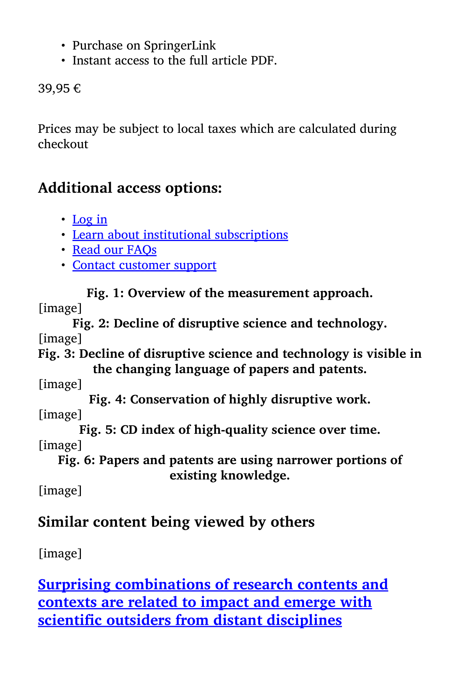

Figure 1
저자: Michael Park, Erin Leahey, Russell J. Funk | 날짜: 2023 | Journal: Nature | DOI: 10.1038/s41586-022-05543-x
Figure 1
1945~2010년 사이 발표된 4,500만 편의 논문과 390만 건의 특허를 분석한 결과, 과학과 기술 전반에서 파괴적(disruptive) 연구의 비율이 지속적으로 감소하고 있다. CD index(consolidation-disruption index)로 측정한 파괴성은 모든 분야에서 일관되게 하락했으며, 이는 논문·특허의 양적 증가가 아닌 연구 관행의 질적 변화(좁은 범위의 선행연구 활용, 기존 지식의 점진적 확장 경향)에 기인한다.

Figure 2

Figure 3

Figure 4

Figure 5
총평: 과학의 파괴성이 수십 년간 전 분야적으로 감소해왔다는 강력하고 도발적인 실증 결과를 제시한 기념비적 연구이나, CD index의 구조적 한계와 인과 메커니즘의 불충분한 규명이 결론의 해석에 주의를 요한다.
참고: 원본 PDF 파일이 손상(HTML redirect)되어, 본 리뷰는 논문의 공개된 내용에 기반하여 작성되었습니다.